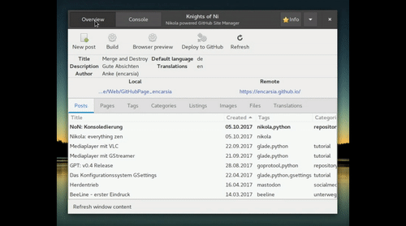

NoN: Konsoledierung
Knights of Ni - jetzt wird's schick
Einmal eingerichtet, benötigt man für das Befeuern einer Nikola-angetriebenen Seite nur einen Dateimanager, einen Editor, ein Terminal und normalerweise zwei Kommandos.
Und weil ich es gern bequem habe, habe ich mir etwas Unterstützung dafür gebastelt.
Was bisher geschah
Die per Button aufgerufenen Nikola-Kommandos wurden bisher folgendermaßen verarbeitet:
- nikola build lief im Hintergrund als subprocess.run(cmd)
- nikola github_deploy wurde im separaten Terminalfenster ausgeführt; dieses wurde nach der erfolgreichen Ausführung wieder geschlossen
Und das soll jetzt alles vorbei sein?
Neu ist immer besser.
—Barney Stinson
Die Oberfläche ist nun per Gtk.Stack zweigeteilt. Per Gtk.StackSwitcher in der Headerbar lässt sich zwischen der normalen Oberfläche und einem Terminal hin- und herwechseln.
Dies hat mehrere Eigenschaften und Vorteile:

- Das Teminal öffnet sich im aktuellen Verzeichnis der Nikola-Instanz.
- Das Terminal kann beliebig verwendet werden.
- Beim exit wird es nur resettet.
- build und github_deploy werden in diesem Terminal ausgeführt, wenn sie über die Oberfläche (Buttons) gestartet werden.
- Beim Ausführen über die Buttons wechselt der Focus auf das Terminal und nach Beenden des Tasks wieder zurück zur Oberfläche. Mit super Überblende (aktivierte Animationen erforderlich)!
- Optisch aufgeräumter, da kein separates Fenster mehr benötigt wird.